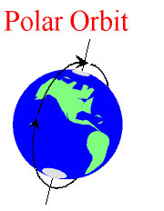
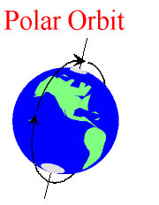

Thermals Experiment for Polar Orbit
The orbits at go around the Earth’s Poles are called Polar Orbit. The Polar Sunsynchoronous Orbit is a special class of Polar Orbit, where the Satellite always passes over any region on Earth at the same local time. Hence defining the local time, will define the entire orbit for this Satellite. These orbits are used extensively by spy Satellites. Most of the Satellites are launched in Low Earth Orbit, with altitudes within 400km to 1500km.
Polar Orbit:

